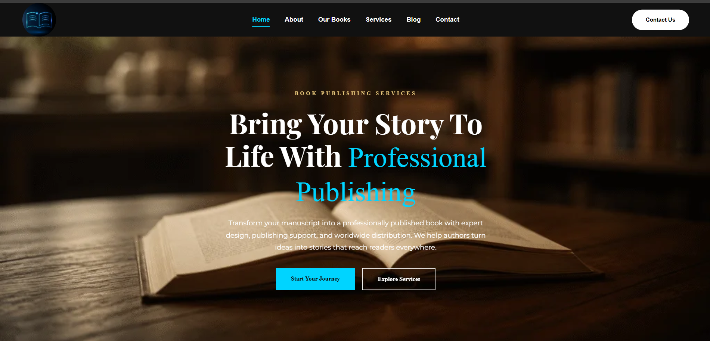

Business Website

PROJECT 01
Blue Book Ghostwritting
A MODERN BOOK PUBLISHING WEBSITE DESIGNED TO SHOWCASE PROFESSIONAL PUBLISHING, EDITING, BOOK DESIGN, MARKETING, AND GLOBAL DISTRIBUTION SERVICES FOR AUTHORS.
HTML5CSS3JavaScriptWordPress